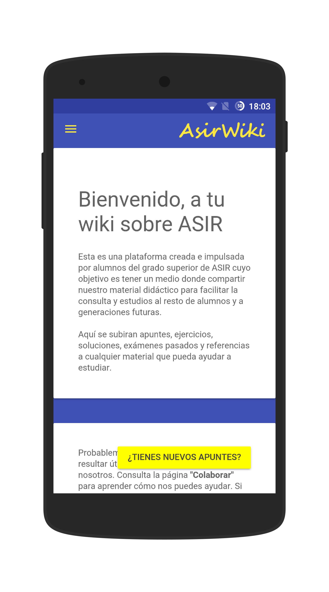
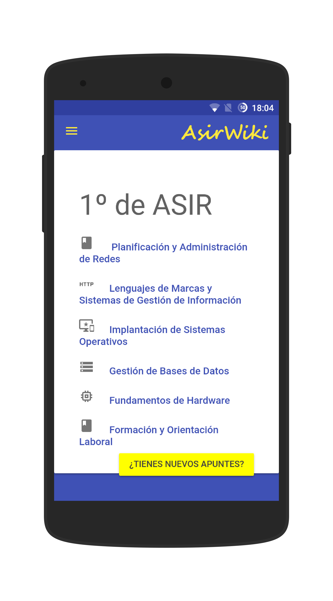
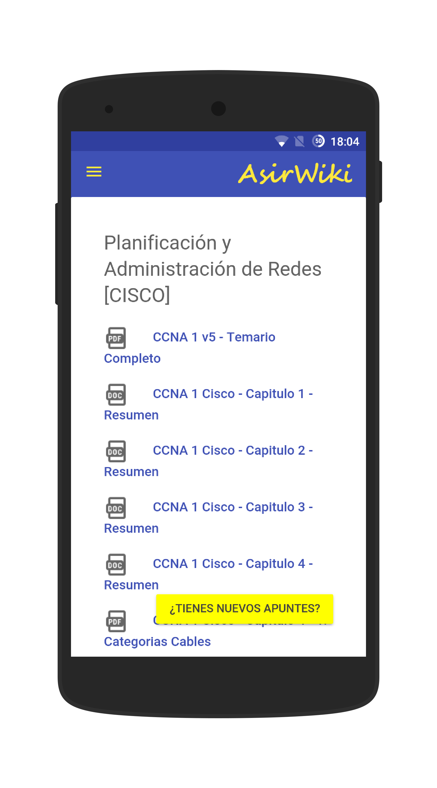

Bienvenido a tu wiki sobre ASIR
Esta es una plataforma creada e impulsada por alumnos del grado superior de ASIR cuyo objetivo es tener un medio donde compartir nuestro material didáctico para facilitar la consulta y estudios al resto de alumnos y a generaciones futuras.Aquí se subiran apuntes, ejercicios, soluciones, exámenes pasados y referencias a cualquier material que pueda ayudar a estudiar.
Ya se encuentra disponible la App OFICIAL de ASIR Wiki para dispositivos Android. ¡Descargala ya!



Probablemente tengas algo que le pueda resultar útil al resto, así que colabora con nosotros. Consulta la página "Colaborar" para aprender cómo nos puedes ayudar. Si conseguimos que esto salga adelante haremos que estudiar ASIR sea mucho más sencillo.
Todos los alumnos te lo agradeceremos. ¡Mucha suerte!
Todos los alumnos te lo agradeceremos. ¡Mucha suerte!